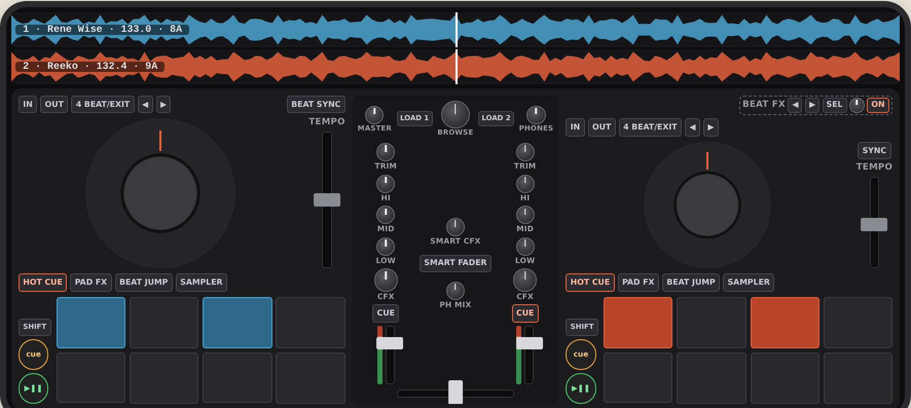

A virtual DDJ-FLX4 on a phone, inside the mesa, so a friend who owns the real controller can keep getting reps on his commute home and have his hands still be right when he sits back down at the hardware.
How to read the tags: his call means Mathias decided it in conversation. my call means the designer chose a default that he heard and did not object to; he can still flip it. builder means the implementer decides. works and drawn only are used in the control map.
Mathias's friend has a Pioneer DDJ-FLX4 at home. His train ride home is dead time he wants to turn into practice. Asked what a good practice ride should leave him better at, the answer was "familiarity and reps": not lessons, not scores, just time with his hands on the board.
So the one thing that matters is transfer. Whatever his thumbs learn on the phone should still be true on the FLX4: where play and cue sit, what SHIFT plus a button does, how the jog nudges, which way the CFX knob goes for a low-pass. Every choice in this doc is judged against that. A nicer phone-native DJ app would be a failure here.
It lives in the mesa because the mesa already has the hard parts he needs around the board: a crate with BPM and key analysis, YouTube and Spotify intake, a PIN gate, and O Arquivo for recorded mixes.
| Decision | Who | Detail |
|---|---|---|
| Controller model | his call | DDJ-FLX4 (two decks). |
| Design target | his call | Design for Mathias's iPhone, current iOS, Safari, installed to the home screen. Landscape is 844 x 390 CSS px, minus the safe areas: about 47 px each side for the Dynamic Island and rounded corners, and about 21 px at the bottom for the home indicator, which leaves roughly 750 x 369 for the board and strip. |
| Also works on | my call | The friend's phone, a recent Samsung Galaxy (model being confirmed, probably an S10-class phone) in current Chrome. Landscape is about 760 x 360 CSS px. Second target: it must work there, but layout and feel are tuned on the iPhone. |
| Layout | his call | Option A: the whole board, phone sideways, both decks and mixer at once, waveforms across the top standing in for the laptop screen (the FLX4 itself has no screen). Rejected: portrait stacked decks (left/right becomes top/bottom), half-board with swipe (only ~25% bigger, loses the other deck mid-transition). |
| Headphone cue | his call | Split cue on one stereo output: cue in the left ear, master in the right. |
| Access | his call | Same mesa PIN gate as the rest of dj.library.icu. |
| Track sources | his call | The mesa crate, YouTube, SoundCloud, and Spotify search (which resolves to a YouTube upload he picks, as the mesa does today). Techno. |
| Practice style | his call | Free play. "Familiarity and reps." |
| Name and URL | my call | A Cabine (the booth) at /cabine, its own full-screen page, linked from the mesa. Installable to the home screen with its own manifest (start_url /cabine). |
| Software behavior | his call | He uses rekordbox with his FLX4, so the board emulates the FLX4 running rekordbox. No custom rekordbox settings have been reported, so rekordbox defaults apply. |
| v1 scope cut | my call | Mic, Smart CFX, Smart Fader, PAD FX 1/2, KEYBOARD, KEY SHIFT are drawn in place but inert. Tapping one shows a small "not yet" note so he knows it is deliberate. |
| Hot cues storage | my call | Hot cues live on the phone, per track. Not synced to the server in v1. |
| Tracks, not sets | my call | A Cabine is for mixing tracks. Search results and pulls longer than 15 minutes are refused with a clear message ("that's a set, not a track"). Keeps memory, storage and analysis time bounded on the phone and on the thermally capped host. |
| Fixing a bad grid | my call | In v1. The crate screen gets a small grid fix for any track: halve or double the BPM, nudge the grid earlier or later, and "this is beat 1" tapped while listening. Corrections are saved on the server with the grid so they follow the track. At home he fixes grids in rekordbox on the laptop, so this is the same job in the same place (off the board). |
| Where his pulls land | my call | A new crate folder, sources/techno/, shared with the mesa like every other folder. |

Behavior is rekordbox's with an FLX4 attached, as he would feel it at home. Touch translations are the only liberty taken, and each is listed. Every control must support multi-touch independently (two thumbs on two different controls at once, plus SHIFT held).
| Control | v1 | Behavior |
|---|---|---|
| PLAY/PAUSE | works | Toggle. SHIFT + PLAY: stutter back to the cue point (rekordbox default). |
| CUE | works | Paused: sets the cue point at the playhead. Held while paused: plays from cue, returns on release. Pressed while playing: back to cue and pause. SHIFT + CUE: back to the start of the track. |
| Jog, top plate | works | Touching the top plate grabs the record: drag rotates it, scrubbing forward and backward (vinyl mode), audio follows the finger. Lift releases back to playing speed. Paused: scrub to find a spot. SHIFT + top: fast search. |
| Jog, outer ring | works | Drag along the ring nudges speed up or down while dragging (pitch bend). Touch translation: the ring is the outer band of the drawn wheel; the inner disc is the top plate. |
| TEMPO slider | works | Vertical drag. Down = faster, as on Pioneer gear. Ranges ±6%, ±10%, ±16%, WIDE, cycled with SHIFT + BEAT SYNC. Shows a center mark. Fine control matters more than travel: the drag must allow 0.02% steps at ±6%. |
| BEAT SYNC | works | Matches this deck's tempo and beat phase to the other deck and stays synced while on (lit). Off by default on every load. |
| IN / OUT | works | Manual loop start and end (quantized to the grid when quantize is on, the rekordbox default). |
| 4 BEAT/EXIT | works | No loop: starts a 4-beat loop. Loop active: exits. SHIFT: reloop. |
| CUE/LOOP CALL ◀ ▶ | works | Loop active: halve / double. No loop: drawn only (memory cue call needs rekordbox memory cues, out of scope). |
| Pad mode: HOT CUE | works | 8 hot cues A to H. Unlit pad sets, lit pad jumps (and plays if playing). SHIFT + pad clears. Colors as rekordbox's defaults. |
| Pad mode: BEAT JUMP | works | Jumps back/forward by 1, 2, 4, 8 beats... in rekordbox's pad order. Keeps phase. |
| SHIFT + BEAT JUMP: BEAT LOOP | works | Pads set loops of 1/4, 1/2, 1, 2, 4, 8, 16, 32 beats. |
| Pad mode: SAMPLER | works | 8 one-shots. rekordbox's factory bank is not ours to ship, so the pads load the mesa's own drum one-shots and synth stabs my call. Through the master, not a channel. |
| PAD FX1/2, KEYBOARD, KEY SHIFT | drawn only | Shows "not yet". |
| SHIFT | works | Held, like the hardware. Per deck, as on the FLX4. |
| Control | v1 | Behavior |
|---|---|---|
| Knobs (all) | n/a | Touch translation: vertical drag, double-tap returns to the default (center for EQ/CFX, unity for TRIM). Center detent feel on EQ and CFX. |
| TRIM | works | Pre-fader gain, same range as the hardware. |
| HI / MID / LOW | works | 3-band EQ, full cut at minimum (kill), small boost at maximum, rekordbox's EQ ranges. |
| CFX | works | Color FX "Filter" (rekordbox default): left of center low-pass, right high-pass, resonant, off at center. |
| CUE (per channel) | works | Sends that channel to the headphone (left-ear) side. Both can be on. |
| Channel level meters | works | Post-fader levels, as on the hardware. |
| Channel faders | works | Vertical drag. |
| Crossfader | works | Horizontal drag. rekordbox's default curve. |
| MASTER LEVEL | works | Master out (the right ear) level. |
| MASTER CUE | works | Adds master to the headphone side. |
| HEADPHONES MIX / LEVEL | works | MIX blends cue and master on the left ear. LEVEL sets the left-ear level. The phone's hardware volume buttons still control everything. |
| BROWSE + LOAD 1 / LOAD 2 | works | Touch translation: pressing BROWSE drops a track list over the waveform strip (the "laptop screen"). Turning BROWSE (drag) moves the highlight; the list also scrolls with a finger. LOAD 1 / LOAD 2 load the highlighted track; loading onto a playing deck follows rekordbox's default load-lock setting (the builder checks which it is). Pressing BROWSE again, or loading, closes the list. |
| Smart CFX, Smart Fader, mic | drawn only | Shows "not yet". |
| Control | v1 | Behavior |
|---|---|---|
| FX SELECT | works | Cycles a v1 subset of rekordbox's Beat FX: Delay, Echo, Reverb, Flanger, Roll my call. Current effect name shown on the waveform strip. |
| BEAT ◀ ▶ | works | Beat fraction (1/4 to 4 beats), synced to the master deck's BPM. |
| CH SELECT | works | 1 / 2 / MASTER, as the hardware lever. Touch translation: tap cycles. |
| LEVEL/DEPTH | works | Wet/dry. |
| ON/OFF | works | Toggles the effect, lit while on. Echo/delay tails ring out after off. |
Two horizontal scrolling waveforms, deck 1 on top, playhead at center, beat grid ticks, hot cue markers, loop region. Per deck: artist and title, current BPM (with tempo applied), key, time remaining, SYNC state. A thin full-track overview per deck shows position. It is read-only my call, following the anti-goals: tapping the waveform does nothing, because at home it is a laptop screen across the desk.
A Cabine gets a crate screen that works in portrait (the "turn sideways" card only covers the board). It reuses the mesa's intake endpoints:
/api/intake/youtube/search, /api/intake/pull).sources/techno/.Sync, quantized loops, beat jump, beat FX timing and the grid ticks all need a beat grid. The analyzer today stores BPM and key only. New: a grid per track (BPM plus first-beat offset, constant tempo, which suits techno), computed when a track is pulled and on demand for older crate tracks, stored next to the analysis. Downbeat (which beat is "1") is a best guess, and the common failures (half or double tempo, grid off by half a beat, wrong beat 1) are fixed by hand with the grid fix on the crate screen (see section 3). A track whose beats are too irregular for a constant grid (the analyzer's beat_cv already measures this) is still playable but SYNC and quantize are disabled for it, with a note.
"Carry" downloads a track to the phone: stereo audio in a format the phone decodes natively, the grid, and a precomputed waveform. The crate screen shows which tracks are on the phone and how much space they use, and lets him remove them. A Cabine requests persistent storage. Carried tracks must survive the phone being offline for days.
POST /api/mesa/export, 200 MB cap, RIFF check) and O Arquivo lists *.wav only. Both need to accept and list the compressed format, with durations, without breaking existing WAV exports./api/ and /audio/ paths are gated by the dj_auth cookie (30-day max age). /static/ is public, so nothing private goes there. If the cookie lapses while offline, the board must keep working with carried tracks and ask for the PIN only when it next needs the server./static/; a worker served from there would only control /static/. The worker must be served at a path whose scope covers /cabine..mixer before). A Cabine's code is its own files, not more lines in escola.js (4,445 lines).dj-lab container, project dir mounted at /app. Before any restart, check /api/jobs for a live pull or separation someone else started and wait for it.No open-source browser FLX4 exists to copy whole. These cover pieces of it (checked 2026-10-27). The dj-lab repo has no license file today; anything borrowed keeps its license notice and credit.
| Project | License | Use |
|---|---|---|
| NextDJ (antoniolg/next-dj) | MIT | Borrow code. An Electron app whose audio runs on Web Audio: two decks, scratch audio, BPM, loops, hot cues, sync, recorder, with tests. Starting point for the deck engine, credited. Its deck player uses the standard buffer player, so backward scrubbing still needs the custom player from section 8. |
| Beat This! (CPJKU/beat_this) | MIT, weights included | Use for the beat grid on the server: beats and downbeats (beat 1), ISMIR 2024. Runs in the container on CPU or the 2070. |
| Mixxx DDJ-FLX4 mapping (mixxxdj/mixxx, res/controllers/Pioneer-DDJ-FLX4-*) | GPL | Read only, never copy (copying would put the repo under the GPL). A written record of what every FLX4 control does, to check behavior against alongside the Pioneer manual. |
| Signalsmith Stretch | MIT | Later, for key lock (out of v1). |
| peaks.js (BBC) | LGPL | Optional for waveforms; drawing our own is fine. |
| Vibes (leezter/Vibes) | none | Ideas only, no license, cannot copy. |